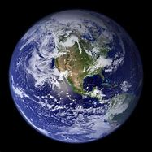
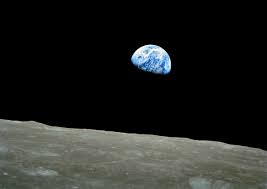

Ziemia (łac. Terra, Tellus; gr. Γαῖα, trb. Gaja) – trzecia, licząc od Słońca, oraz piąta pod względem wielkości planeta Układu Słonecznego. Pod względem średnicy, masy i gęstości jest to największa planeta skalista Układu Słonecznego. Ziemia jest zamieszkana przez miliony gatunków, w tym przez człowieka. Jest jedynym znanym miejscem we Wszechświecie, w którym występuje życie. Według danych zebranych metodą datowania izotopowego, planeta uformowała się ok. 4,54 ± 0,05 mld lat temu. Prawdopodobnie w ciągu pierwszego miliarda lat po uformowaniu się Ziemi w oceanach pojawiło się życie. Z żyjących na Ziemi organizmów żywych składa się biosfera, która wpływa na jej atmosferę, hydrosferę, litosferę i inne czynniki abiotyczne planety, umożliwiając rozwój i wzrost liczby organizmów aerobowych i anaerobowych oraz powstanie ozonosfery. Rozwój życia na lądzie i w wodzie umożliwiła powłoka ozonowa oraz ziemskie pole magnetyczne, zmniejszając natężenie promieniowania ultrafioletowego, oraz magnetosfera, odbijająca cząstki wiatru słonecznego i promieniowania kosmicznego. Dystans dzielący Słońce od Ziemi, jej właściwości fizyczne oraz jej historia geologiczna są najważniejszymi czynnikami, które pozwoliły organizmom żyć i ewoluować. Różnorodność biologiczna Ziemi nieustannie powiększa się, chociaż w dziejach życia Ziemi proces ten był kilkukrotnie przerywany, kiedy miało miejsce masowe wymieranie gatunków.